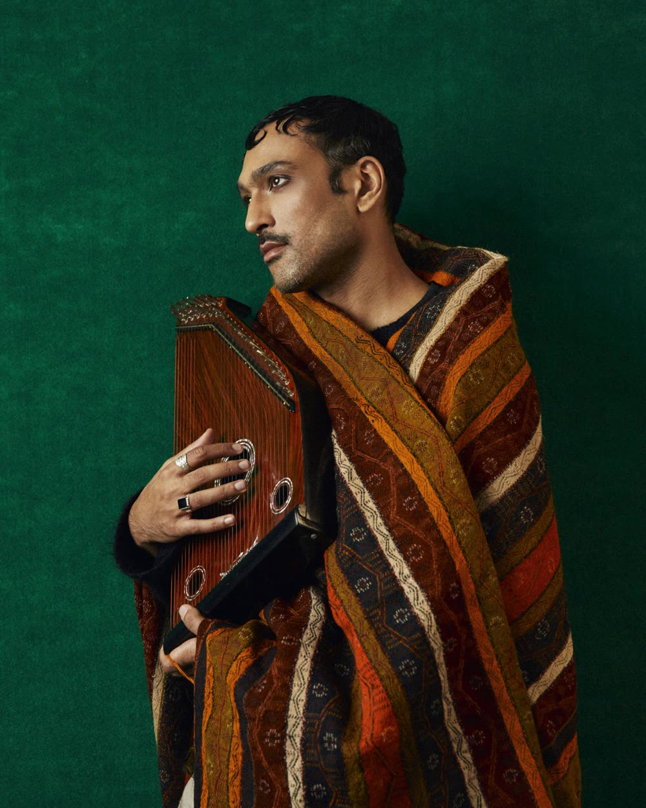
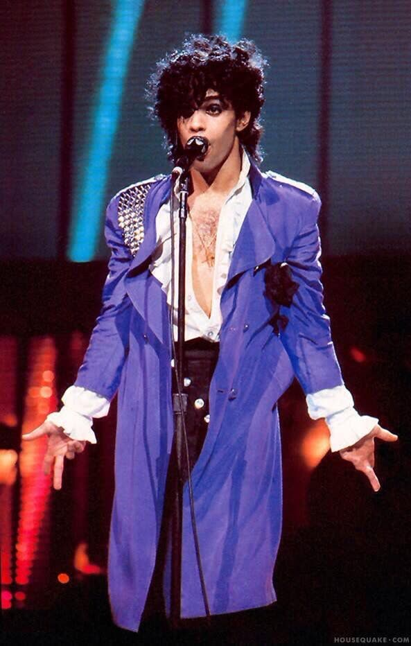
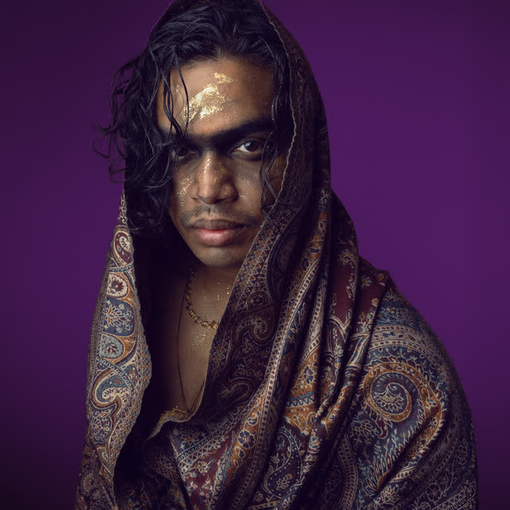
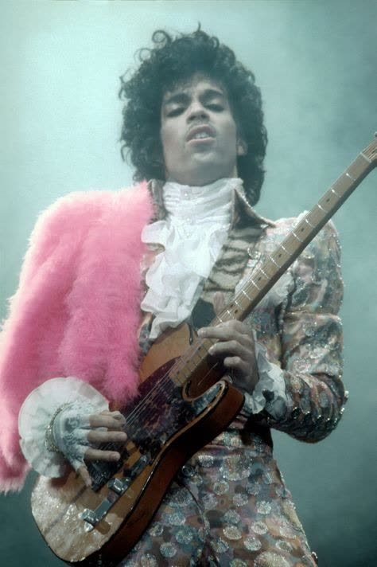
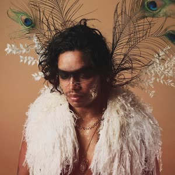
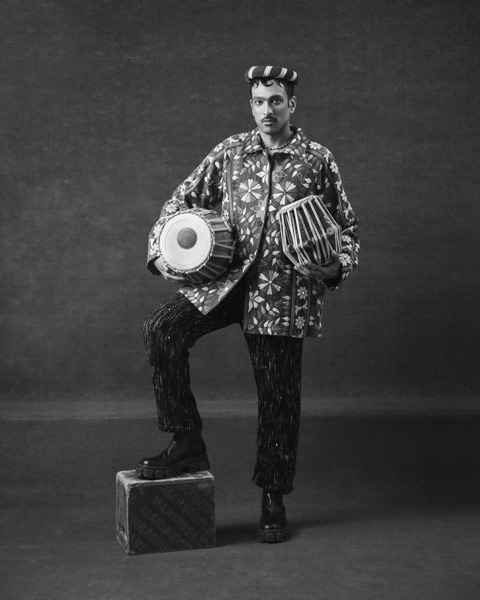
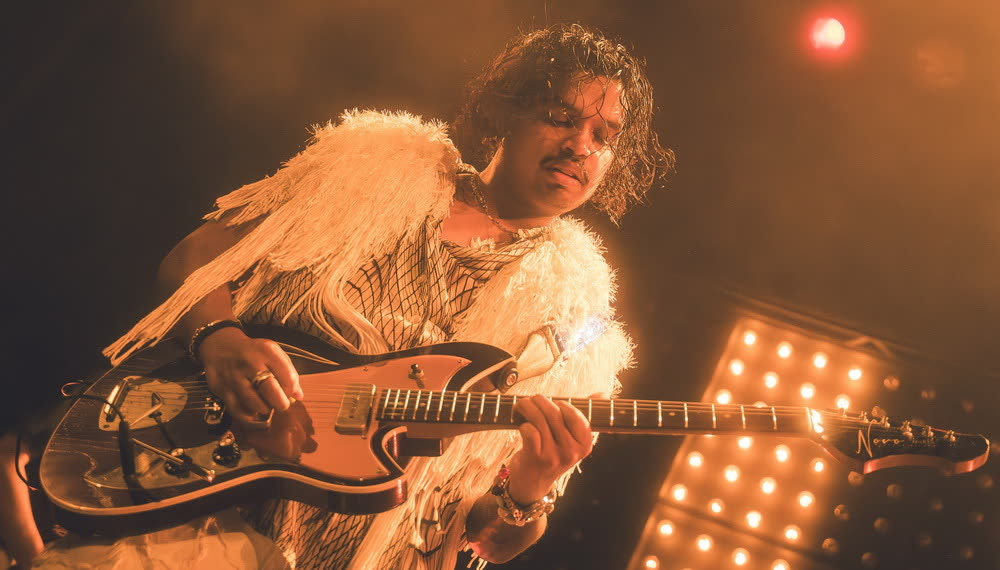

These are demos. Rough on purpose, and none of them are finished. They exist to show you the sound is real and not a description of a sound.
Most of the words are older than anyone reading this. Lecha Dodi is the Friday-night poem that welcomes Shabbat like a bride. Adon Olam and Hine Ma Tov come off the same shelf. Modeh Ani is the line you say before you get out of bed. Metta is the Buddhist loving-kindness practice. Call Your Parents is the one I wrote.
Each point is an axis rather than a name: what the singing does, what the rhythm section does, what the arrangement does. All six of these are audible in the demos above. That is the only rule the diagram follows.
Avraham and Ibrahim. The Hebrew and the Arabic for the same ancestor, and both of them are already sitting inside my legal name: Axel Ivrahim Mansoor.
Spelled with a V, which is nobody's standard transliteration. That is the point. It is the seam between the two, which is the same seam the music is working.
Sing inherited poetry over an instrumental world somebody else built.
Ali Sethi did it with Nicolás Jaar on Intiha: he cut loops out of Jaar's ambient record, improvised Urdu couplets from poets two hundred years dead, and sent the voice notes back. Almost none of the words were new. The record still sounds like now.
Jews ran this play first. Israel Najara set Hebrew sacred poems to Turkish and Greek and Spanish street melodies in the fifteen hundreds and got criticised for it. Shalom Shabazi mixed Hebrew, Judeo-Arabic and Aramaic inside single poems in Yemen. Ofra Haza put Shabazi over 1988 dance production and it went around the world.
Nothing has to be invented to be true. The voice is mine, the words carry a thousand years, and the room is whatever a collaborator wants to build.
There is a wave of artists reaching back into their own traditions and dragging them into the present, because we are all so rootless.
These are not sound-alikes. They are the room I think this belongs in.







Other people's photographs, collected as reference. Not Ivrahim, and not shot for this. They are here because they say the look faster than I can write it.
There is no record. No release date, no label, no streaming numbers worth quoting.
What exists is seven demos, a method with four hundred years behind it, a room in Los Angeles where musicians are starting to gather, and a very clear idea of what this is supposed to feel like.
Axel Mansoor is building Ivrahim in public. The journals, the false starts, the parts that are not working. If you want the behind-the-scenes, that is where it lives.
Not a team. A collective. Ivrahim is one artist inside it, and it is called Minyan, which is the ten people Jewish prayer needs before it can start.
Per song, not per career. If you have a sonic world and you want a voice in it, that is the whole job.
Especially if you have never made anything that sounds like your own tradition and have been quietly curious about it.
The look above is borrowed. It should not stay borrowed.
Including if what you have is an introduction rather than a skill. That counts.